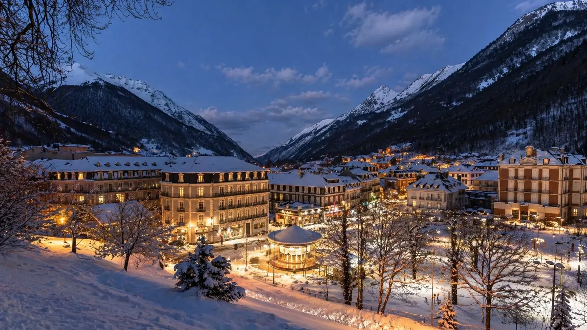

Un village actif toute l’année
L’office de tourisme présente Cauterets comme un village au cœur des Pyrénées, associant ski, randonnées, thermes et nature préservée, été comme hiver.
Source : Office de Tourisme de Cauterets
À Cauterets, une location saisonnière ne se résume pas à une annonce. Le voyageur compare un village thermal, un accès ski, une promesse bien-être, le Pont d’Espagne, le Lac de Gaube, la randonnée et la qualité réelle du logement. LocPilot aide les propriétaires à rendre cette promesse plus claire, plus visible et moins dépendante d’un seul canal.
Cauterets attire plusieurs profils de voyageurs : skieurs, familles, curistes, amateurs de randonnée, visiteurs du Pont d’Espagne, amoureux du Lac de Gaube et séjours bien-être. Une location performante doit donc clarifier son emplacement, son usage et son expérience réelle.

Ces données ne garantissent pas la performance d’une location. Elles montrent surtout pourquoi un propriétaire doit relier son bien à la bonne promesse : village, thermalisme, ski, Pont d’Espagne, Lac de Gaube, nature, bien-être et canal direct.
L’office de tourisme présente Cauterets comme un village au cœur des Pyrénées, associant ski, randonnées, thermes et nature préservée, été comme hiver.
Source : Office de Tourisme de Cauterets
Vallées de Gavarnie présente Cauterets comme une ville thermale perchée à 950 m, porte d’entrée vers le Pont d’Espagne, le Lac de Gaube et le Parc national des Pyrénées.
Source : Vallées de Gavarnie · Cauterets
Le site officiel indique un accès au domaine skiable en télécabines depuis le village, avec un front de neige à 1 800 m et un point culminant autour de 2 400 m.
Source : Cauterets · station de ski
Le dossier de presse hiver 2025-2026 distingue le Cirque du Lys pour le ski alpin et le Pont d’Espagne pour les activités nordiques, avec une ouverture annoncée 7j/7 du 5 décembre au 19 avril 2026.
Le dossier de presse Cauterets indique 318 766 journées skieurs, 58 859 journées piétons, 665 200 nuitées hivernales et 5 M€ d’investissements en 2025.
Le Pont d’Espagne est indiqué à 7 km de Cauterets. En hiver, l’accès dépend des conditions, de l’équipement obligatoire et des modalités de stationnement ou de navette.
Source : Cauterets · Pont d’Espagne
N’PY présente le Pont d’Espagne comme une porte d’entrée du Parc national des Pyrénées, à 1 500 m d’altitude, avec forêts, cascades, vallées, lacs et eaux vives.
L’INSEE indique que l’Occitanie atteint 47,2 millions de nuitées estivales en 2025, en hausse de 2,2 %, et que la fréquentation touristique progresse de 4,2 % dans les Pyrénées.
Source : INSEE Occitanie · été 2025
L’INSEE signale que l’offre locative sur plateformes reste dynamique dans les Pyrénées, avec +9 % de nuits disponibles et +10 % de nuits réservées sur la saison observée.
Source : INSEE · données locatives été 2025
Une location au centre village, près des thermes, proche des télécabines, avec parking, vue montagne ou accès pratique au Pont d’Espagne ne raconte pas la même promesse. Le propriétaire doit faire comprendre cette différence rapidement.
Cauterets porte une image de thermalisme et de détente qui peut attirer des séjours plus calmes, des couples, des familles et des voyageurs hors période ski.
L’accès au domaine depuis le village donne de la valeur aux logements bien placés, faciles à comprendre et capables de rassurer sur les trajets, le matériel et le stationnement.
Ces repères concentrent une grande partie de l’imaginaire nature de Cauterets : cascades, lacs, forêts, randonnées et accès au Parc national des Pyrénées.
La destination ne dépend pas uniquement de l’hiver. Elle parle aussi aux marcheurs, aux familles, aux curistes, aux sportifs et aux voyageurs nature.
Cauterets se comprend aussi depuis les flux Lourdes, Argelès-Gazost et Vallées des Gaves, avec une logique d’accès et de séjour très forte.
Les attentes ne sont pas les mêmes pour une cure, un week-end au Pont d’Espagne, un séjour ski ou une semaine familiale : la page doit les distinguer.
Sur une destination aussi identifiée, un logement peut perdre en attractivité si le voyageur ne comprend pas vite où il se situe, à qui il s’adresse, ce qu’il facilite et pourquoi il mérite d’être réservé plutôt qu’un autre. La clarté visuelle, locale et commerciale devient donc un levier direct de confiance.
LocPilot n’a pas vocation à remplacer le propriétaire. L’objectif est de structurer les bons signaux : visibilité locale, canal direct, cohérence des annonces, outils, visuels et lecture de rentabilité.
Travailler les angles Cauterets, Pont d’Espagne, Lac de Gaube, thermalisme, Cirque du Lys, randonnée et séjour quatre saisons.
Clarifier l’expérience du bien, son environnement, ses accès, sa vue, son confort et les éléments qui aident le voyageur à se projeter.
Structurer calendriers, redirections, moteur de réservation ou synchronisation selon l’organisation choisie par le propriétaire.
Comparer les périodes, les canaux, les commissions, les nuits, les prix moyens et les actions prioritaires à mettre en place.
Un site ou une page directe peut clarifier les distances, les activités, les équipements et la valeur du logement avant la réservation.
LocPilot accompagne la stratégie digitale et les outils. Le propriétaire reste responsable de ses annonces, prix, contrats et encaissements.
LocPilot intervient dans un cadre de conseil, de visibilité locale, de structuration digitale, de configuration d’outils et de prestation de services. Le propriétaire reste seul décisionnaire et responsable de ses annonces, prix, réservations, contrats, encaissements et obligations réglementaires.
Cauterets se situe au cœur des Vallées des Gaves, entre thermalisme, montagne, Pont d’Espagne, Lourdes, Argelès-Gazost, Luz-Saint-Sauveur et Gavarnie-Gèdre. Ces pages permettent de mieux comprendre les zones voisines et les leviers utiles pour structurer une location saisonnière.
Replacer Cauterets dans la stratégie globale des destinations thermales, montagne, nature et quatre saisons du département.
Lire la page 65Relier Cauterets à la porte d’entrée touristique de la vallée des Gaves, au Sanctuaire et aux flux internationaux.
Voir LourdesConnecter Cauterets à la ville thermale pivot des vallées, aux services, au Val d’Azun, à Hautacam et à Lourdes.
Voir Argelès-GazostComparer Cauterets avec une autre destination thermale, montagne et vallée, connectée au Pays Toy et au Tourmalet.
Voir Luz-Saint-SauveurRelier Cauterets aux grands sites pyrénéens, aux cirques classés, à la randonnée et aux séjours nature emblématiques.
Voir Gavarnie-GèdreVoir comment un bien peut être mieux compris par Google, les voyageurs et les moteurs IA.
Lire le guide SEO/GEOStructurer un canal complémentaire aux OTA, sans confusion ni promesse excessive.
Lire le guide directSynchroniser calendriers, canaux, prix et messages sans perdre en clarté opérationnelle.
Lire le guide outilsComprendre le périmètre d’intervention LocPilot et les responsabilités qui restent côté propriétaire.
Lire la FAQOui. Cauterets fait partie des localités prioritaires de LocPilot dans les Hautes-Pyrénées. L’accompagnement porte sur la visibilité locale, le canal direct, les outils, la valorisation du bien et la lecture de rentabilité.
Non. Cauterets fonctionne aussi avec le thermalisme, le bien-être, le Pont d’Espagne, le Lac de Gaube, la randonnée, la vallée du Marcadau, les séjours nature, les familles et les usages quatre saisons.
Oui. Luz-Saint-Sauveur porte une promesse de base de vallée et Gavarnie-Gèdre une promesse grands sites. Cauterets associe davantage village thermal, station de ski, Pont d’Espagne, Lac de Gaube, Parc national des Pyrénées et séjour bien-être.
Oui, si le bien s’adresse à des voyageurs sensibles à la nature, à la randonnée et aux grands sites. Ces repères doivent être présentés avec précision, notamment sur les accès, la saison, le stationnement, les navettes et le niveau d’effort attendu.
Oui, s’il reste complémentaire aux plateformes et s’il inspire confiance. Une page locale claire, des visuels forts, une redirection ou un moteur de réservation maîtrisé, des calendriers synchronisés et des informations pratiques peuvent réduire la dépendance à un seul canal.
Seulement si le bien ou l’établissement respecte les conditions d’éligibilité applicables. Google reste décisionnaire de la validation, de l’affichage et de la visibilité. LocPilot peut accompagner la structuration, mais ne garantit pas la validation ni le référencement d’une fiche.
Non. LocPilot structure les signaux, le canal direct, les outils et la lecture de performance, mais ne garantit ni position SEO, ni volume de réservations, ni validation par Google ou par des plateformes tierces.
Faisons un premier point sur votre emplacement, vos annonces, votre canal direct, vos visuels, vos outils et les leviers les plus pertinents pour renforcer votre présence à Cauterets.